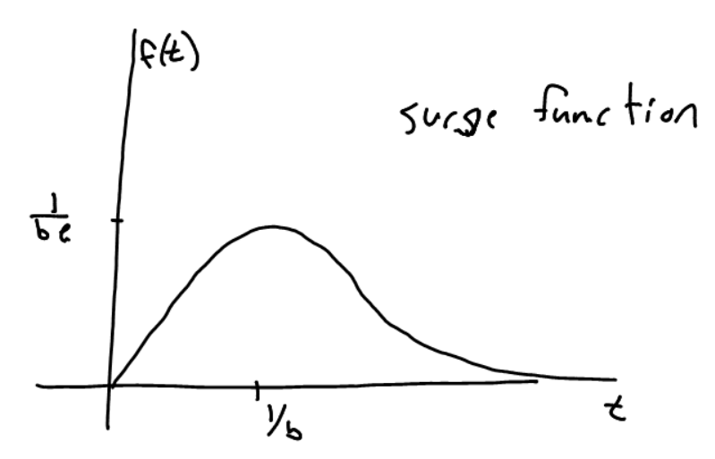

For \(b > 0\) the surge function \(f(t) = te^{-bt} \) gives the amount of a
drug in the body as a function of time, \(t \geq 0\).
- What do we know about \(f\)?
- We know \(f(t) \geq 0\) since \(t \geq0 \) and \(e^{-bt} > 0\).
- Show \(f(t)\) solves the differential equation \(f' + bf = e^{-bt}\).
- We take the derivative, plug in \(f,f'\) into the LHS of the DE, and show we get the RHS.
\(f'(t) = e^{-bt} - bte^{-bt}\) (product rule)
\(f' + bf = e^{-bt} - bte^{-bt} + bte^{-bt} = e^{-bt} + 0 = e^{-bt}\)
- What are the times and values of the global max and min of the function?
- First find critical points
\(f'(t) = e^{-bt} - bte^{-bt} = (1-bt)e^{-bt}\)
\(f'(t) = 0 \Rightarrow t=1/b\) because \(e^{-bt} >0\) always.
\(f(t=1/b) = (1/b)e^{-b(1/b)} = 1/(be)\)
We know this is a maximum because if \( t < 1/b \) then \(f' > 0\) and if \(t > 1/b\) then \(f' < 0\). (First derivative test)
- Is this a good model? Why or why not? What happens as \(t \to \infty\)?
- As \(t \to \infty\) we see that \(f(t) \to 0\).
